1. Introduction: Finding the Exact Information You Need
Imagine kijiye aap ek bade engineering college ke examination cell mein data analyst hain. Aapke database mein 1,000 students ke records hain: unke student_id, student_name, department, semester marks, attendance percentage, aur daily study_hours.
Aapke Principal aur Department HODs aapse roz alag-alag sawal puchte hain:
- "Sirf Computer Science (CS) department ke students ke marks dikhaiye!"
- "Aarav Sharma naamak student ki attendance kitni hai?"
- "Un sabhi students ki list nikaliye jinke marks 80 se zyada hain aur attendance 85% se upar hai!"
- "Top 5 highest scoring students kaun hain?"
- "Student ID 'STU104' ke pure academic credentials fetch kijiye!"
Agar aapko pure 1,000 rows ko baar-baar print ya loop karke search karna pade, toh analysis bohot slow, error-prone aur exhausting ho jayegi. Yahi par Pandas ka Indexing and Selecting Engine hamara sabse shaktishaali tool banta hai!
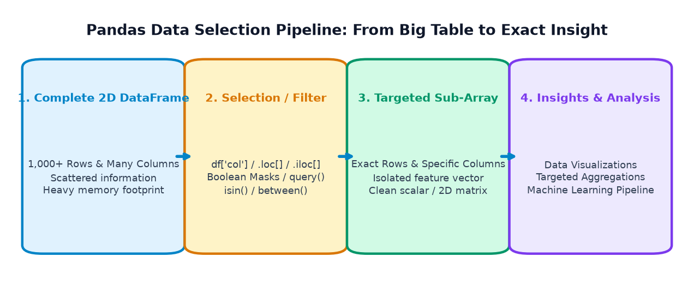
Indexing aur Selecting ka maksad hota hai: pure bulky DataFrame mein se exact targeted rows aur columns ko isolate karna bina memory waste kiye, taaki aap specific calculations, filtering, visualizations, ya business reports bina kisi delay ke execute kar sakein.
The Three Selection Philosophies in Pandas:
Pandas data extraction ke liye teen mukhya tarike provide karta hai:
- Label-Based Selection (
.loc[]): Row aur column ke explicit names ya labels ke zariye data dhundna (jaise phonebook mein naam se search karna). - Integer-Position Selection (
.iloc[]): Zero-based numerical offsets (0, 1, 2...) ke zariye data dhundna (jaise array ke memory index se access karna). - Boolean Conditional Selection (
df[condition]): Logical rules aur mathematical filters (jaisemarks >= 80) ke zariye matching records extract karna.
2. Understanding Columns and Rows in a 2D DataFrame
Ek Pandas DataFrame do dimensions (axes) par kaam karta hai:
- Axis 0 (Rows / Index): Horizontal records ko represent karta hai. Har row ka ek unique index label aur zero-based integer position hota hai.
- Axis 1 (Columns): Vertical features ya attributes ko represent karta hai (jaise
marks,department). Har column ka ek string ya integer header name hota hai.
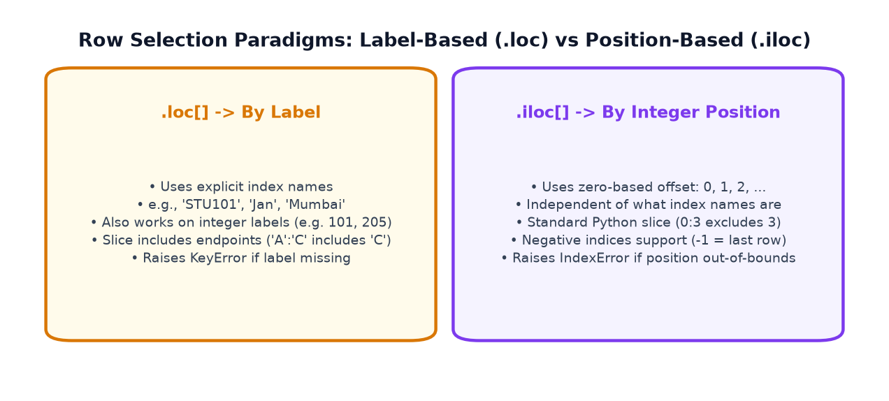
Column Selection vs Row Selection: The Output Shape Difference
Pandas mein selection karte waqt sabse pehli baat jo dhyan rakhni hoti hai woh hai Return Type:
- Single Column Selection: Agar aap ek single column select karte hain (
df['marks']), toh Pandas ek 1Dpd.Seriesreturn karta hai. - Multiple Columns Selection: Agar aap columns ki list pass karte hain (
df[['student_name', 'marks']]), toh Pandas ek 2Dpd.DataFramereturn karta hai (chahe list mein 1 hi column kyu na ho!). - Row Selection: Rows ko access karne ke liye normal brackets
df[...]direct use nahi kiye jaate; balki explicit indexers.loc[]ya.iloc[]use kiye jaate hain.
Example 1: College Student Dataset Selection
Chaliye 5 students ke academic records par column aur row selection test karte hain:
import pandas as pd # Synthetic College Student Records student_data = { 'student_name': ['Aarav Sharma', 'Diya Patel', 'Rohan Verma', 'Ananya Iyer', 'Kabir Singh'], 'department': ['CS', 'IT', 'CS', 'ECE', 'IT'], 'marks': [88, 94, 76, 68, 91], 'attendance': [92, 96, 85, 78, 90] } df_students = pd.DataFrame(student_data) # 1. Single Column Selection -> Returns Series s_marks = df_students['marks'] print("--- 1. SINGLE COLUMN ('marks') ---") print(s_marks) print(f"Type: {type(s_marks)} | Shape: {s_marks.shape}") # 2. Multiple Column Selection -> Returns DataFrame df_sub = df_students[['student_name', 'marks']] print(" --- 2. MULTIPLE COLUMNS (['student_name', 'marks']) ---") print(df_sub) print(f"Type: {type(df_sub)} | Shape: {df_sub.shape}")
Example 2: Online-Store Product Catalog
E-commerce store inventory mein se product catalog ke specific business attributes extract karte hain:
import pandas as pd product_data = { 'product': ['Wireless Mouse', 'Mechanical Keyboard', 'USB-C Hub', '27-inch Monitor', 'Webcam 1080p'], 'price': [599, 2499, 899, 14499, 1899], 'category': ['Peripherals', 'Peripherals', 'Accessories', 'Displays', 'Peripherals'], 'units_sold': [142, 68, 215, 34, 95] } df_products = pd.DataFrame(product_data) # Isolate product name and price for pricing catalog df_pricing = df_products[['product', 'price']] print("--- E-COMMERCE PRICING CATALOG ---") print(df_pricing) # Row by Position: Retrieve top selling product (first row) first_product = df_products.iloc[0] print(" --- FIRST PRODUCT (POSITION 0) ---") print(first_product)
3. Selecting Columns Using Square Brackets
Pandas DataFrame mein column selection ka standard tarika square brackets [] hota hai. Is syntax ko master karne ke liye do critical rules yaad rakhein:
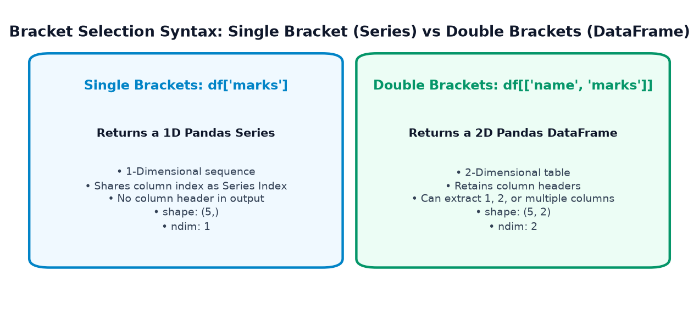
1. Single Brackets vs Double Brackets
df['column_name']: Ek string pass karne par Series milti hai. Yeh tab use hota hai jab aapko kisi ek feature par mathematical operations (jaise.mean(),.sum()) run karne ho.df[['col_a', 'col_b']]: Python list pass karne par DataFrame milta hai. Bahar wale brackets indexing syntax hain, aur andar wale brackets Python list literal hain!df[['col_a']]: Agar list mein sirf ek column ho, tab bhi 2D DataFrame hi return hoga.
2. Changing Column Ordering on the Fly
Aap brackets mein columns ki list pass karke unka display aur export order instantly reorder kar sakte hain:
df[['marks', 'student_name', 'department']]
3. Why Dot Access (df.column) is Fragile & Dangerous!
Python mein bohot se beginners df.marks likhte hain. Halanki yeh valid hai, industry-standard code mein isse avoid kiya jaata hai kyuki:
- Spaces in Column Names: Agar column ka naam
'student name'hai, tohdf.student nameSyntaxError dega! - Attribute Collisions: Agar column ka naam Pandas ke built-in attribute ya method se match karta hai (jaise
shape,count,index,min), tohdf.shapeDataFrame ki actual dimensions return karega, na ki aapka column! - Creating New Columns: Naya column assign karne ke liye dot access kaam nahi karta (
df.new_col = [...]silent bug create karta hai). Hamesha bracketdf['new_col'] = [...]use karna mandatory hai.
import pandas as pd df_demo = pd.DataFrame({ 'student name': ['Aarav', 'Diya'], 'shape': [10, 20] # Dangerous column name collision! }) # Dot access fails on spaces: df_demo.student name -> SYNTAX ERROR print("Safe bracket access with space:", df_demo['student name'].tolist()) # Dot access collides with built-in .shape attribute! print("df_demo.shape (Returns DataFrame dimensions!):", df_demo.shape) print("df_demo['shape'] (Returns the actual column values!):", df_demo['shape'].tolist())
4. Understanding .loc[]: Label-Based Selection
Pandas mein .loc[] accessor label-based selection ke liye design kiya gaya hai. Iska matlab hai ki aap rows aur columns ko unke exact naam ya labels se target karte hain.
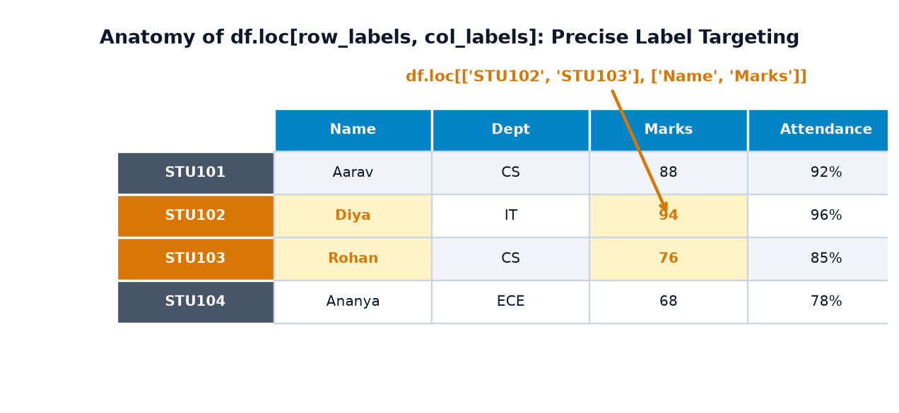
Core Syntax & Rules of .loc[]:
Standard syntax hota hai: df.loc[row_indexer, column_indexer]
- Single Row by Label:
df.loc['STU102']→ Returns a Series of that student's records. - Multiple Rows by Label List:
df.loc[['STU101', 'STU103']]→ Returns a DataFrame with matching rows. - Rows & Columns Together:
df.loc[['STU101', 'STU102'], ['student_name', 'marks']]→ Intersects specific rows with specific columns. - All Rows, Specific Columns:
df.loc[:, ['student_name', 'marks']](colon:indicates "all rows"). - Label-Based Slicing (CRITICAL!):
df.loc['STU101':'STU103', 'student_name':'marks'].
Crucial Rule: Python ke normal slice ke vipreet,.loc[]label slices mein STOP endpoint STRICTLY INCLUDE hota hai!
Example 1: College Records with Custom Student IDs
Dekhiye kaise custom string index set karke .loc[] ke zariye direct student ID se data fetch kiya jaata hai:
import pandas as pd df_stu = pd.DataFrame({ 'name': ['Aarav', 'Diya', 'Rohan', 'Ananya', 'Kabir'], 'dept': ['CS', 'IT', 'CS', 'ECE', 'IT'], 'marks': [88, 94, 76, 68, 91], 'attendance': [92, 96, 85, 78, 90] }, index=['STU101', 'STU102', 'STU103', 'STU104', 'STU105']) # 1. Fetch single student record by primary ID label diya_record = df_stu.loc['STU102'] print("--- DIYA PATEL (STU102) RECORD ---") print(diya_record) # 2. Select specific students and specific columns selected_view = df_stu.loc[['STU101', 'STU104'], ['name', 'marks']] print(" --- TARGETED ROWS & COLUMNS ---") print(selected_view) # 3. Label Slice: From STU102 to STU104 (STU104 is included!) slice_view = df_stu.loc['STU102':'STU104', 'name':'marks'] print(" --- LABEL SLICE (INCLUSIVE OF ENDPOINTS) ---") print(slice_view)
Example 2: Monthly Sales Time-Series
Month names (jaise 'Jan', 'Feb', 'Mar') as index labels par .loc[] use karke quarterly financial reporting perform karte hain:
import pandas as pd df_sales = pd.DataFrame({ 'revenue': [45000, 52000, 61000, 58000], 'orders': [310, 345, 412, 390] }, index=['Jan', 'Feb', 'Mar', 'Apr']) # Extract Q1 Performance (January through March inclusive!) q1_report = df_sales.loc['Jan':'Mar', 'revenue'] print("Q1 Monthly Revenue (Jan - Mar):") print(q1_report) print(f"Total Q1 Revenue: Rs {q1_report.sum():,}")
5. Understanding .iloc[]: Integer Position-Based Selection
Agar aapko index labels ya column names nahi pata hain, ya aap data ko purely unki physical memory position (row number aur column number) ke hisab se extract karna chahte hain, toh aap .iloc[] (Integer Location) use karte hain.
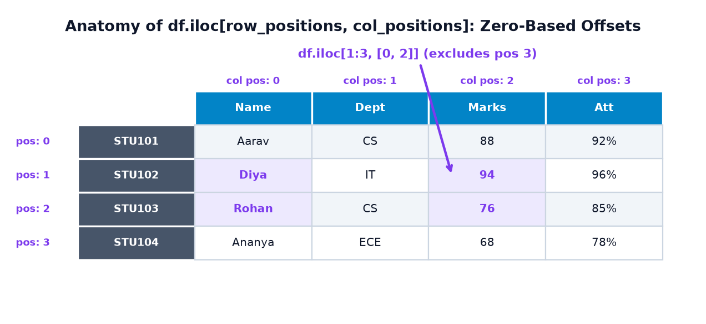
Core Syntax & Rules of .iloc[]:
Standard syntax: df.iloc[row_positions, column_positions]
- Zero-Based Indexing: Pehli row hamesha position
0hoti hai, doosri1, teesri2... - First Row:
df.iloc[0]→ Returns first record as Series. - Last Row (Negative Indexing):
df.iloc[-1]→ Returns last record. - Positional Slicing (CRITICAL!):
df.iloc[0:3, 1:3].
Python Standard Rule:.iloc[]standard Python slicing follow karta hai, jisme STOP index strictly EXCLUDE hota hai (0:3ka matlab positions 0, 1, 2 hain; position 3 shamil nahi hoti!). - IndexError Warning: Agar aap DataFrame ki length se bada integer pass karenge (jaise 5 rows wale table mein
df.iloc[10]), tohIndexError: single positional indexer is out-of-boundsraise hoga.
Example 1: Selecting Students by Position
import pandas as pd df_stu = pd.DataFrame({ 'name': ['Aarav', 'Diya', 'Rohan', 'Ananya', 'Kabir'], 'dept': ['CS', 'IT', 'CS', 'ECE', 'IT'], 'marks': [88, 94, 76, 68, 91] }, index=['STU101', 'STU102', 'STU103', 'STU104', 'STU105']) # 1. First row (Position 0) print("--- FIRST ROW (iloc[0]) ---") print(df_stu.iloc[0]) # 2. First 3 students (Positions 0, 1, 2) and First 2 columns (Positions 0, 1) top3_sub = df_stu.iloc[0:3, 0:2] print(" --- POSITIONAL SLICE (0:3, 0:2) ---") print(top3_sub) # 3. Extract Single Cell: Diya's Marks (Row position 1, Col position 2) cell_val = df_stu.iloc[1, 2] print(f" Single Cell at iloc[1, 2]: {cell_val}")
Example 2: Product Inventory Positional Extraction
E-commerce inventory table se bottom-most item aur uski quantity position se extract karte hain:
import pandas as pd df_products = pd.DataFrame({ 'product': ['Mouse', 'Keyboard', 'Hub', 'Monitor', 'Webcam'], 'price': [599, 2499, 899, 14499, 1899], 'stock': [50, 20, 150, 15, 40] }) # Last record using negative indexing last_item = df_products.iloc[-1] print("Last Item in Inventory (iloc[-1]):") print(last_item) # Rows at positions [1, 3] and columns at [0, 2] (product & stock) custom_slice = df_products.iloc[[1, 3], [0, 2]] print(" Custom Positions (Rows [1, 3], Cols [0, 2]):") print(custom_slice)
6. .loc[] vs .iloc[]: The Definitive Battle
Pandas seekhne wale 90% students ka sabse bada confusion hota hai: "Sir, kab .loc[] use karein aur kab .iloc[]?" Is section ko dhyan se samajh lijiye, aap kabhi confuse nahi honge!
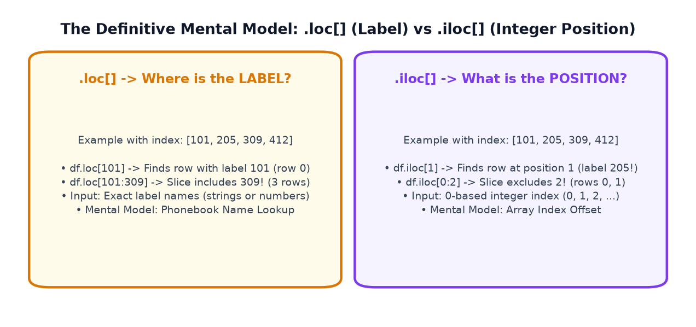
Comparison Matrix: .loc[] vs .iloc[]
| Comparison Feature | .loc[] (Label-Based) |
.iloc[] (Integer Position-Based) |
|---|---|---|
| Core Philosophy | Data ko uske Name / Label se dhundna. | Data ko uski Physical Offset / Position (0, 1...) se dhundna. |
| Accepted Inputs | Index labels (strings, integers, dates), list of labels, boolean masks. | Integers (0 to N-1), list of integers, integer slices, boolean masks. |
| Custom String Index | Directly targets string IDs: df.loc['STU101']. |
String index ko ignore karke row position dekhta hai: df.iloc[0]. |
| Slicing Stop Endpoint | INCLUSIVE: Stop label slice ka hissa banta hai! | EXCLUSIVE: Stop position standard Python slice ki tarah exclude hota hai! |
| Integer Labels (101, 205...) | df.loc[101] label 101 wali row dhundega (chahe woh row 0 par ho). |
df.iloc[1] position 1 wali row dhundega (chahe uska label kuch bhi ho). |
| Negative Integers | Tabhi kaam karta hai agar index mein actually negative number ho (jaise -1). | Standard Python reverse indexing: df.iloc[-1] hamesha last row deta hai. |
| Error When Missing | Raises KeyError if label not found. |
Raises IndexError if position out of range. |
| Mental Model | Phonebook Lookup: Name se search karna. | Array Memory Offset: Memory address/index se search karna. |
The Non-Consecutive Integer Demonstration
Agar DataFrame ka index consecutive numbers (0, 1, 2...) nahi hai, balki roll numbers ya bus numbers (101, 205, 309, 412) hain, tab .loc aur .iloc ka difference visually clear ho jaata hai:
import pandas as pd # DataFrame with Non-Consecutive Integer Index df_transit = pd.DataFrame({ 'city': ['Mumbai', 'Delhi', 'Bengaluru', 'Hyderabad'], 'ridership': [12500, 18400, 14200, 9800] }, index=[101, 205, 309, 412]) print("--- ORIGINAL TRANSIT DATAFRAME ---") print(df_transit) # 1. df.loc[101] vs df.iloc[1] print(" 1. df.loc[101] (Finds label 101 -> Row 0):") print(df_transit.loc[101]['city']) print(" 2. df.iloc[1] (Finds position 1 -> Row with label 205):") print(df_transit.iloc[1]['city']) # 2. Slicing Difference: df.loc[101:309] vs df.iloc[0:2] print(" 3. df.loc[101:309] (Includes endpoint 309 -> 3 rows):") print(df_transit.loc[101:309]) print(" 4. df.iloc[0:2] (Excludes endpoint 2 -> 2 rows, pos 0 and 1):") print(df_transit.iloc[0:2])
7. Selecting Individual Cells & High-Speed Access: .at and .iat
Jab aapko kisi table mein se sirf ek single value (scalar) extract karni ho ya modify karni ho, toh .loc aur .iloc use karna thoda heavy ho sakta hai kyuki woh internally indexing checks aur Series slicing perform karte hain. Pandas iske liye do lightweight aur fast accessors provide karta hai: .at[] aur .iat[].
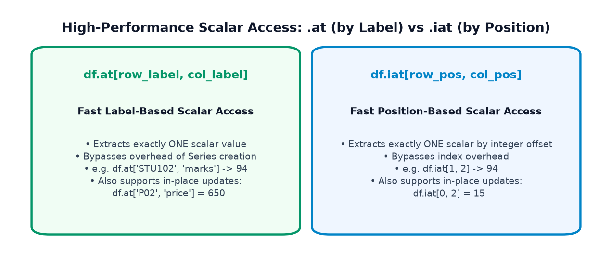
Comparison of the 4 Coordinate Accessors:
df.loc['STU102', 'marks']: General label-based accessor. Can return Series, DataFrame, or scalar.df.iloc[1, 2]: General position-based accessor. Can return Series, DataFrame, or scalar.df.at['STU102', 'marks']: Dedicated label-based scalar accessor. Returns ONLY one raw scalar value. Fast execution.df.iat[1, 2]: Dedicated position-based scalar accessor. Returns ONLY one raw scalar value by integer offsets. Fastest execution.
Example: Inventory Price Lookup & In-Place Price Update
import pandas as pd df_inv = pd.DataFrame({ 'product': ['Laptop', 'Mouse', 'Keyboard'], 'price': [55000, 600, 2500], 'stock': [12, 45, 20] }, index=['P01', 'P02', 'P03']) print("--- ORIGINAL INVENTORY ---") print(df_inv) # 1. Fast scalar read with .at (by label) and .iat (by position) mouse_price = df_inv.at['P02', 'price'] keyboard_stock = df_inv.iat[2, 2] print(f" Mouse Price (df.at['P02', 'price']): Rs {mouse_price}") print(f"Keyboard Stock (df.iat[2, 2]): {keyboard_stock} units") # 2. Fast in-place value update df_inv.at['P02', 'price'] = 650 # Update price of Mouse df_inv.iat[0, 2] = 15 # Restock Laptop from 12 to 15 print(" --- UPDATED INVENTORY (AFTER IN-PLACE WRITES) ---") print(df_inv)
8. Slicing Rows and Columns
Slicing ka matlab hota hai DataFrame ke andar se ek continuous ya stepped sub-matrix ko extract karna. Pandas mein row slicing aur column slicing dono ko ek sath combine kiya ja sakta hai.
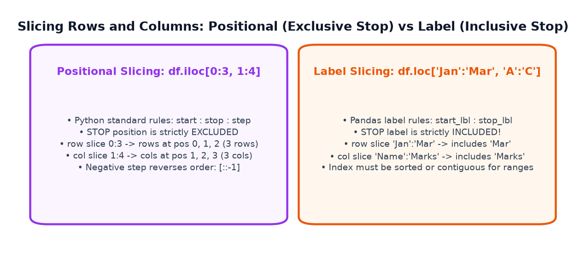
Slicing Syntax Patterns:
df.iloc[start:stop]: Sirf rows slice karta hai (0 to stop-1).df.iloc[row_slice, col_slice]: 2D rectangular grid slice (jaisedf.iloc[0:3, 1:4]).df.iloc[::2, :]: Har doosri row extract karta hai (step = 2).df.iloc[::-1, :]: Pure DataFrame ko reverse order mein invert kar deta hai.df.loc[start_lbl:stop_lbl, start_col:stop_col]: Label boundary slicing (both bounds included).
import pandas as pd df_stu = pd.DataFrame({ 'name': ['Aarav', 'Diya', 'Rohan', 'Ananya', 'Kabir', 'Meera'], 'dept': ['CS', 'IT', 'CS', 'ECE', 'IT', 'CS'], 'marks': [88, 94, 76, 68, 91, 84], 'attendance': [92, 96, 85, 78, 90, 88] }) # 1. Positional 2D Grid Slice: First 3 rows, middle 2 columns grid_view = df_stu.iloc[0:3, 1:3] print("--- 2D POSITIONAL SLICE (df.iloc[0:3, 1:3]) ---") print(grid_view) # 2. Stepped Slicing: Alternate students (rows 0, 2, 4) alternate_view = df_stu.iloc[::2, :] print(" --- ALTERNATE ROWS (df.iloc[::2, :]) ---") print(alternate_view[['name', 'marks']])
9. Boolean Indexing and Conditional Filtering
Data science aur real-world analytics mein sabse zyada use hone wala operation hai: Conditional Filtering. Jisme hum dataset par ek ya multiple conditions lagakar sirf wahi rows retain karte hain jo us condition ko satisfy karein.
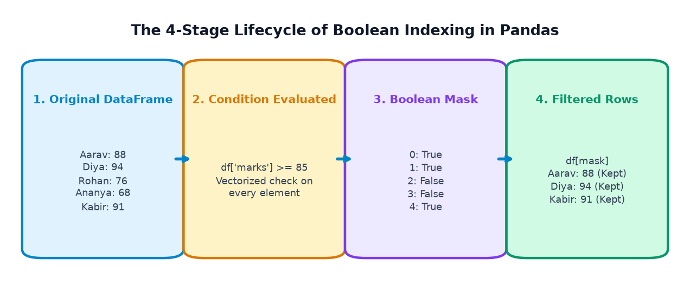
What is a Boolean Mask?
Jab aap kisi column par comparison operator lagate hain (jaise df['marks'] >= 85), toh Pandas har element ko check karta hai aur ek boolean Series (True/False values) return karta hai. Is boolean Series ko Boolean Mask kehte hain.
Jab is mask ko square brackets df[mask] mein pass kiya jaata hai, toh Pandas sirf un rows ko retain karta hai jahan mask ki value True hoti hai!
Combining Conditions: The Strict Parentheses Rule
Real-world filtering mein aksar multiple conditions ko combine karna padta hai:
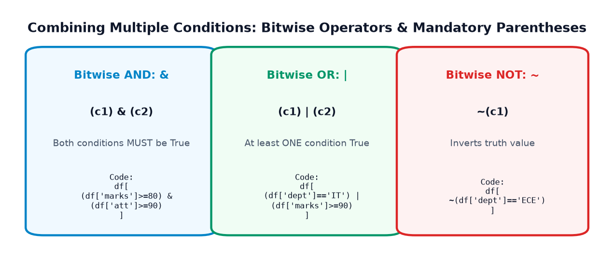
Python mein bitwise operator & ki precedence comparison operators (>=, ==) se zyada hoti hai. Agar aap parentheses nahi lagayenge:
df[df['marks'] >= 80 & df['attendance'] >= 85] ← CRASHES with TypeError / ValueError!
Correct Syntax:
df[(df['marks'] >= 80) & (df['attendance'] >= 85)] ← WORKS FLAWLESSLY!
Example: Complex Filtering on Student Records
import pandas as pd df_stu = pd.DataFrame({ 'name': ['Aarav', 'Diya', 'Rohan', 'Ananya', 'Kabir', 'Meera'], 'dept': ['CS', 'IT', 'CS', 'ECE', 'IT', 'CS'], 'marks': [88, 94, 76, 68, 91, 84], 'attendance': [92, 96, 85, 78, 90, 88] }) # 1. Inspect the raw boolean mask mask_distinction = df_stu['marks'] >= 85 print("--- RAW BOOLEAN MASK (marks >= 85) ---") print(mask_distinction) # 2. Filter with AND (&): Distinction Marks (>=85) AND High Attendance (>=90) mask_honors = (df_stu['marks'] >= 85) & (df_stu['attendance'] >= 90) honors_students = df_stu[mask_honors] print(" --- HONORS STUDENTS (Marks >= 85 & Attendance >= 90) ---") print(honors_students[['name', 'dept', 'marks', 'attendance']]) # 3. Filter with OR (|): Department is IT OR Marks >= 90 mask_tech = (df_stu['dept'] == 'IT') | (df_stu['marks'] >= 90) print(" --- IT DEPT OR MARKS >= 90 ---") print(df_stu[mask_tech][['name', 'dept', 'marks']]) # 4. Negation with NOT (~): Exclude ECE department mask_no_ece = ~(df_stu['dept'] == 'ECE') print(" --- EXCLUDING ECE (NOT ~) ---") print(df_stu[mask_no_ece][['name', 'dept']])
10. Useful Filtering Methods: isin(), between(), query(), isna() & notna()
Boolean conditions powerful hain, lekin complex criteria likhte waqt code lamba aur messy ho sakta hai. Pandas iske liye kuch highly optimized convenience filtering methods offer karta hai:
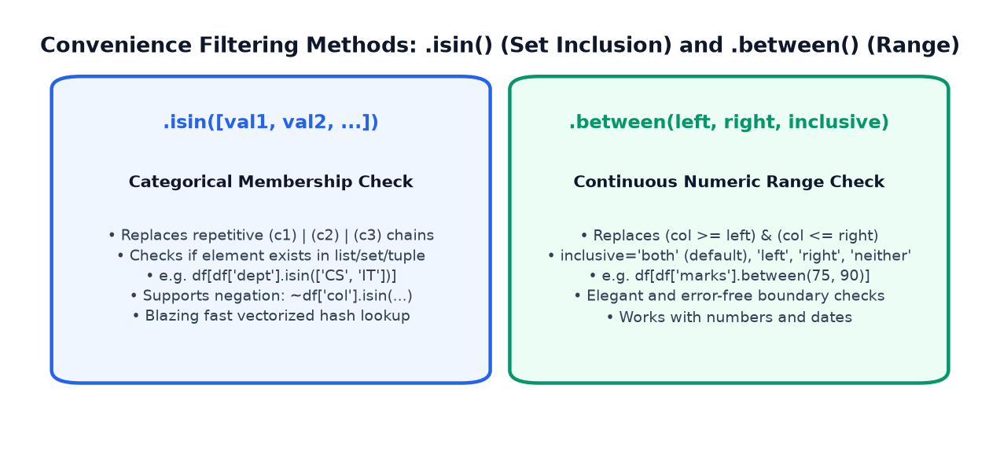
1. Categorical Selection with .isin()
Agar aapko kisi column ko multiple values ke sath match karna ho (jaise dept == 'CS' or dept == 'IT' or dept == 'ECE'), toh baar-baar | likhne ke bajaye aap list pass kar sakte hain:
df[df['department'].isin(['CS', 'IT'])]
Yeh method internally fast hash-table lookup use karta hai aur code ko clean banata hai.
2. Range Selection with .between()
Numeric ya date columns par range check karne ke liye: (col >= left) & (col <= right) likhne ke bajaye:
df[df['marks'].between(75, 90)]
By default, between() dono boundaries ko include karta hai (inclusive='both').
3. String Querying with .query()
Pandas SQL-like string queries support karta hai jo brackets ko hata kar natural language jaisa experience deti hain:
df.query("marks >= 80 and dept == 'CS'")
Caveat: query() column names mein spaces ya symbols hone par thoda rigid hota hai, aur external Python variables use karne ke liye @variable_name syntax lagana padta hai.
4. Detecting & Selecting Missing Data: .isna() & .notna()
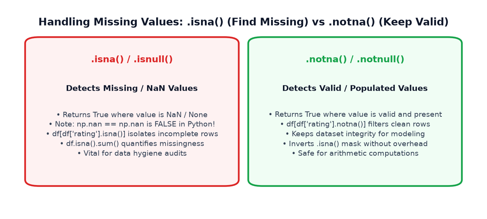
Real-world datasets mein missing values (NaN ya None) common hote hain. Remember: Python mein np.nan == np.nan hamesha False return karta hai! Isliye direct equality check kabhi kaam nahi karega.
df[df['col'].isna()]: Sirf missing/incomplete rows ko isolate karta hai.df[df['col'].notna()]: Sirf complete/valid records ko select karta hai.
import numpy as np import pandas as pd df_stu = pd.DataFrame({ 'name': ['Aarav', 'Diya', 'Rohan', 'Ananya', 'Kabir'], 'dept': ['CS', 'IT', 'CS', 'ECE', 'IT'], 'marks': [88, 94, 76, 68, 91], 'project_score': [90.0, np.nan, 85.0, 70.0, np.nan] # Actual missing values! }) # 1. isin(): Select CS or IT students cs_it = df_stu[df_stu['dept'].isin(['CS', 'IT'])] print("--- 1. CS & IT STUDENTS (.isin) ---") print(cs_it[['name', 'dept']]) # 2. between(): Marks between 75 and 90 (Inclusive) mid_range = df_stu[df_stu['marks'].between(75, 90)] print(" --- 2. MARKS BETWEEN 75 AND 90 (.between) ---") print(mid_range[['name', 'marks']]) # 3. query(): SQL-style expressive filter query_res = df_stu.query('marks >= 80 and dept == "CS"') print(" --- 3. QUERY EXPRESSION (marks >= 80 and dept == 'CS') ---") print(query_res[['name', 'dept', 'marks']]) # 4. isna(): Find students who haven't submitted projects unsubmitted = df_stu[df_stu['project_score'].isna()] print(" --- 4. MISSING PROJECT SUBMISSIONS (.isna) ---") print(unsubmitted[['name', 'dept', 'project_score']])
11. Conditional Selection with where() and mask()
Aam taur par conditional filtering (jaise df[condition]) non-matching rows ko table se delete ya drop kar deta hai. Lekin kai scenarios mein humein pure table ka size aur row alignment maintain rakhna hota hai, bas specific values ko replace ya censor karna hota hai!
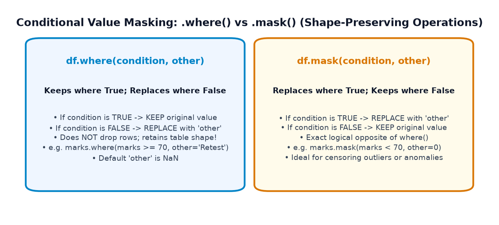
The Fundamental Rules:
df.where(condition, other=...):- Jahan condition True hai → Original value KEEP hoti hai.
- Jahan condition False hai → Value
otherse REPLACE ho jaati hai (default isNaN).
df.mask(condition, other=...):- Jahan condition True hai → Value
otherse REPLACE ho jaati hai. - Jahan condition False hai → Original value KEEP hoti hai.
- Yeh
where()ka exact logical opposite hota hai!
- Jahan condition True hai → Value
import numpy as np import pandas as pd marks_series = pd.Series([88, 64, 92, 55, 78], name='exam_marks') # 1. where(): Keep passing marks (>= 70), replace failing with 'Needs Remedial' status = marks_series.where(marks_series >= 70, other='Needs Remedial') print("--- .where() RESULT ---") print(status) # 2. mask(): Censor/Mask scores below 70 with 0 censored = marks_series.mask(marks_series < 70, other=0) print(" --- .mask() RESULT ---") print(censored) # 3. Real-world sensor calibration: Mask temperatures outside 20°C - 40°C raw_sensor_temps = pd.Series([28.5, 45.2, 31.0, 14.8, 33.5]) valid_temps = raw_sensor_temps.where((raw_sensor_temps >= 20) & (raw_sensor_temps <= 40), other=np.nan) print(" --- SENSOR READINGS FILTERED WITH .where() ---") print(valid_temps)
12. Selecting Data from a Pandas Series
Pandas Series ek 1D labeled array hoti hai. Isme selection ke rules DataFrames se milte-julte hote hain lekin ek fundamental difference hota hai jise samajhna zaroori hai!
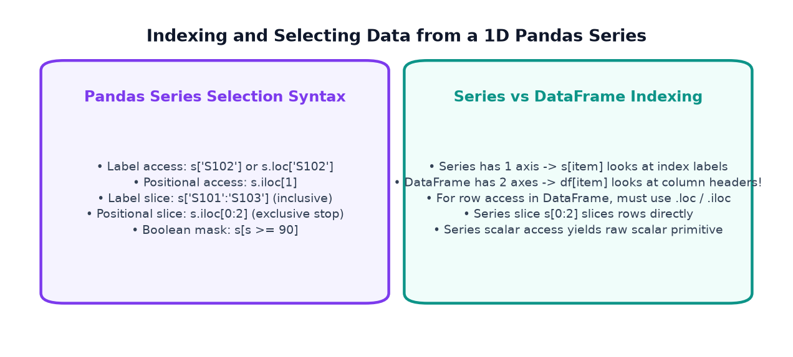
The Crucial 1D vs 2D Indexing Rule:
DataFrame mein 2 axes hoti hain, isliye df['name'] hamesha Column Header search karta hai.
Series mein sirf 1 axis hoti hai, isliye s['S102'] hamesha Row Label search karta hai!
Series Access Mechanisms:
- Direct Label Access:
s['S102']→ Returns scalar value94. - Explicit Label Access:
s.loc['S102']→ Safer, explicit label lookup. - Positional Access:
s.iloc[1]→ Returns value at offset 1. - Label Slicing:
s.loc['S101':'S103']→ Includes endpoint 'S103'. - Positional Slicing:
s.iloc[0:2]→ Excludes endpoint 2. - Boolean Filtering:
s[s >= 90]→ Returns filtered Series of high scores.
import pandas as pd scores = pd.Series([88, 94, 76, 68, 91], index=['S101', 'S102', 'S103', 'S104', 'S105'], name='marks') # 1. Label selection via .loc print("Score of S102:", scores.loc['S102']) # 2. Positional selection via .iloc print("Score at position 1:", scores.iloc[1]) # 3. Label slice (Includes S103) print(" Label Slice (S101 to S103):") print(scores.loc['S101':'S103']) # 4. Boolean filtering on Series print(" Top Scorers (Marks >= 90):") print(scores[scores >= 90])
13. Real-World Case Study 1: Student Data Explorer
Ab tak humne indexing aur selection ke jitne bhi tools seekhe hain—bracket access, .loc, .iloc, boolean filters, isin(), isna(), aur scalar lookups—chaliye unhe ek real-world comprehensive 12-step guided mini-project mein execute karte hain!
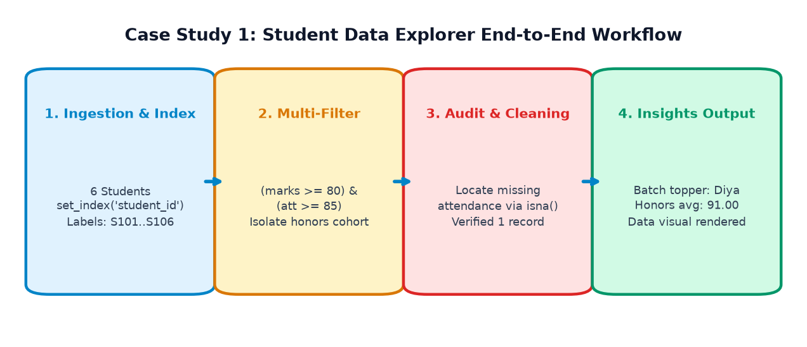
import numpy as np import pandas as pd # ============================================================================== # STEP 1: Construct the Synthetic College Dataset # ============================================================================== student_records = { 'student_id': ['STU101', 'STU102', 'STU103', 'STU104', 'STU105', 'STU106'], 'student_name': ['Aarav Sharma', 'Diya Patel', 'Rohan Verma', 'Ananya Iyer', 'Kabir Singh', 'Meera Nair'], 'department': ['CS', 'IT', 'CS', 'ECE', 'IT', 'CS'], 'marks': [88, 94, 76, 68, 91, 84], 'attendance': [92.0, 96.0, 85.0, 78.0, 90.0, np.nan], # Note: S106 has missing attendance 'study_hours': [6.5, 8.0, 5.0, 3.5, 7.5, 6.0] } df_raw = pd.DataFrame(student_records) # ============================================================================== # STEP 2: Inspect Dimensions and Set Meaningful Business Index # ============================================================================== df_students = df_raw.set_index('student_id') print(f"Step 2: Dataset Dimensions -> {df_students.shape[0]} Rows, {df_students.shape[1]} Columns") # ============================================================================== # STEP 3 & 4: Single and Multiple Column Extractions # ============================================================================== s_hours = df_students['study_hours'] # Series df_academic = df_students[['student_name', 'marks', 'attendance']] # DataFrame # ============================================================================== # STEP 5 & 6: Label and Position-Based Record Retrieval # ============================================================================== diya_profile = df_students.loc['STU102'] # Label lookup first_three = df_students.iloc[0:3] # Positional lookup # ============================================================================== # STEP 7 & 8: High-Performance Multi-Condition Filtering # Filter: Marks >= 80 AND Attendance >= 85 # ============================================================================== honors_filter = (df_students['marks'] >= 80) & (df_students['attendance'] >= 85) df_honors = df_students[honors_filter] print(" --- STEP 8: HONORS COHORT (Marks >= 80 & Attendance >= 85) ---") print(df_honors[['student_name', 'department', 'marks', 'attendance']]) # ============================================================================== # STEP 9: Categorical Filtering with .isin() # ============================================================================== tech_depts = df_students[df_students['department'].isin(['CS', 'IT'])] # ============================================================================== # STEP 10: Identify Incomplete Records with .isna() # ============================================================================== missing_att_students = df_students[df_students['attendance'].isna()] print(" --- STEP 10: STUDENTS WITH MISSING ATTENDANCE ---") print(missing_att_students[['student_name', 'department']]) # ============================================================================== # STEP 11: Summary Statistics of Selected Cohort # ============================================================================== honors_avg_marks = df_honors['marks'].mean() honors_avg_hours = df_honors['study_hours'].mean() print(f" --- STEP 11: HONORS COHORT SUMMARY ---") print(f"Cohort Size : {len(df_honors)} students") print(f"Average Marks : {honors_avg_marks:.2f}") print(f"Average Study Hours: {honors_avg_hours:.2f} hrs/day")
Is synthetic sample mein study hours aur marks ke beech strong correlation dekhne ko milta hai ($r = 0.9959$). Dhyan rahe ki correlation statistical association darshata hai, direct clinical ya causal proof nahi!
14. Real-World Case Study 2: E-commerce Data Explorer
Ab business context mein ek online computer electronics store ke SKU inventory data ko process karte hain:
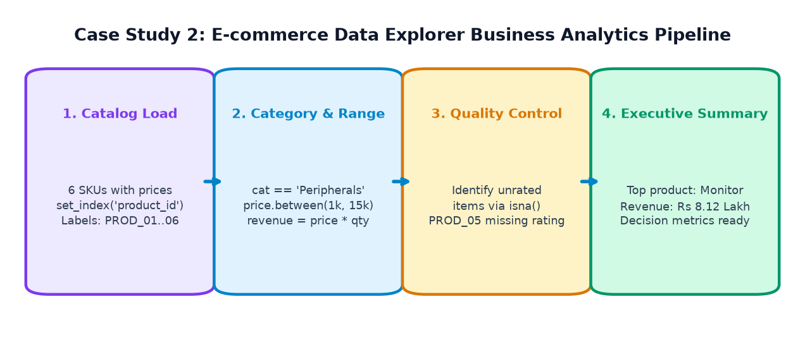
import numpy as np import pandas as pd df_ecom = pd.DataFrame({ 'product_id': ['PROD_01', 'PROD_02', 'PROD_03', 'PROD_04', 'PROD_05', 'PROD_06'], 'product_name': ['Ergonomic Chair', 'Mechanical Keyboard', 'USB-C Cable', '27-inch 4K Monitor', 'Noise-Canceling Headset', 'Wireless Mouse'], 'category': ['Furniture', 'Peripherals', 'Accessories', 'Displays', 'Audio', 'Peripherals'], 'price': [12999, 2499, 399, 28999, 8499, 799], 'quantity_sold': [45, 120, 480, 28, 65, 230], 'rating': [4.6, 4.8, 4.2, 4.7, np.nan, 4.5] # Unrated item }).set_index('product_id') # 1. Derive total revenue column df_ecom['revenue'] = df_ecom['price'] * df_ecom['quantity_sold'] # 2. Filter: High-Revenue Products (Revenue > Rs 2,00,000) high_revenue_skus = df_ecom[df_ecom['revenue'] > 200000] print("--- 1. HIGH-REVENUE SKUs (> Rs 2,00,000) ---") print(high_revenue_skus[['product_name', 'category', 'revenue']]) # 3. Filter: Mid-tier price range between Rs 1,000 and Rs 15,000 mid_price_skus = df_ecom[df_ecom['price'].between(1000, 15000)] print(" --- 2. MID-TIER PRODUCTS (Rs 1,000 - Rs 15,000) ---") print(mid_price_skus[['product_name', 'price']]) # 4. Data Hygiene Audit: Products awaiting customer reviews unrated = df_ecom[df_ecom['rating'].isna()] print(" --- 3. UNRATED PRODUCTS (Awaiting Reviews) ---") print(unrated[['product_name', 'category']]) # 5. Top revenue generator top_product_id = df_ecom['revenue'].idxmax() top_product = df_ecom.loc[top_product_id] print(f" Top Revenue Driver: {top_product['product_name']} (Rs {top_product['revenue']:,})")
15. Graphs and Data Visualizations
Data selection sirf table printing tak seemit nahi hoti. Asli power tab aati hai jab aap targeted subsets ko charts ke zariye visualize karte hain:
1. Raw Batch Academic Performance
Har student ke exam marks ka comparison batch average ($83.5$) aur distinction benchmark ($85$) ke sath:
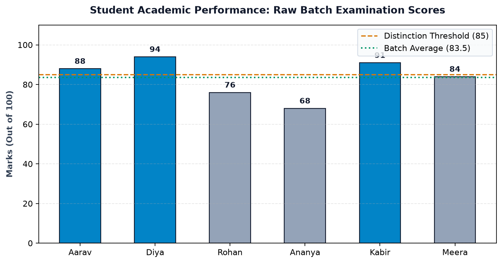
2. Filtered Honors Cohort Comparison
Jab humne boolean filter (marks >= 80) & (attendance >= 85) apply kiya, toh isolated students ka performance correlation dekhne ko mila:
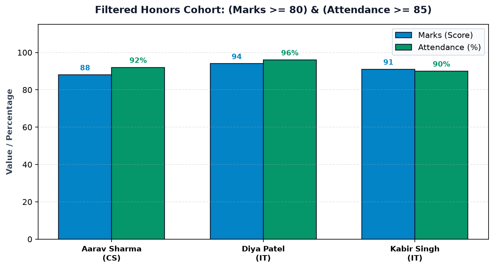
3. Category Revenue Analytics
E-commerce dataset mein se category-wise revenue aggregation ka horizontal visualization:
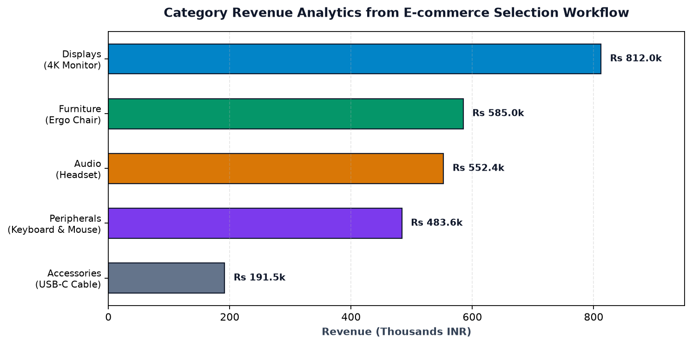
4. Temperature Sensor Monitoring with .where()
Sensor anomalies aur glitches ko highlight karke clean readings retain karne ka graphical demonstration:
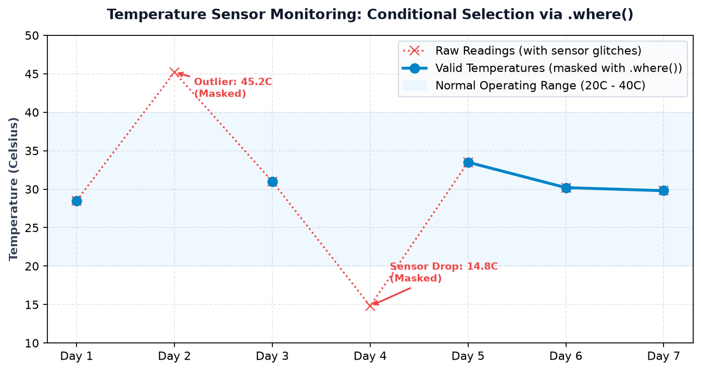
16. Top 12 Beginner Mistakes & Indexing Traps
Indexing aur selection mein beginners aksar in 12 common traps mein phas jaate hain. Inhe padh kar aap ghanto ka debugging time bacha sakte hain:
Error: df[df['marks'] >= 80 & df['attendance'] >= 85]
Why: Python mein bitwise & ki priority >= se zyada hoti hai.
Fix: Hamesha har condition ko parentheses mein pack karein: df[(df['marks'] >= 80) & (df['attendance'] >= 85)].
Error: df[(df['marks'] >= 80) and (df['att'] >= 85)] → ValueError: The truth value of a Series is ambiguous.
Why: Python ka and pure object ka single boolean mangta hai. Vectorized element-by-element operation ke liye bitwise & aur | hi required hain.
Symptom: df.loc['A':'C'] 3 rows deta hai (C included), lekin df.iloc[0:2] sirf 2 rows deta hai (2 excluded).
Fix: Remember: .loc label slice includes stop label; .iloc integer slice strictly excludes stop index!
Error: df[df['dept'] == 'CS']['marks'] = 95
Why: Chained indexing ek temporary slice par write karne ki koshish karta hai, jisse original DataFrame update nahi hota.
Fix: Hamesha direct .loc use karein: df.loc[df['dept'] == 'CS', 'marks'] = 95.
Error: df['name', 'marks'] → KeyError: ('name', 'marks')
Why: Pandas isse ek single tuple column name samajhta hai.
Fix: List pass karein double brackets ke sath: df[['name', 'marks']].
Symptom: df['marks '] ya df[' marks'] raises KeyError: 'marks'.
Fix: Ingestion ke baad columns clean karein: df.columns = df.columns.str.strip().
Error: df[df['rating'] == np.nan] → Returns an empty DataFrame 0 rows!
Why: IEEE 754 floating point standard ke hisab se nan == nan is False.
Fix: Hamesha df[df['rating'].isna()] use karein.
Error: df.set_index('student_id') run kiya lekin index change nahi hua.
Fix: Reassign karein: df = df.set_index('student_id') ya inplace=True use karein.
Error: Agar index [101, 205, 309] hai, toh df.loc[0] KeyError dega kyuki label 0 exist nahi karta.
Fix: Use df.iloc[0] to get the first row by offset.
Symptom: sub_df = df[df['marks'] > 80]; sub_df['bonus'] = 5 raises SettingWithCopyWarning.
Fix: Explicit deep copy banayein: sub_df = df[df['marks'] > 80].copy().
Error: df.query("marks > min_marks") → UndefinedVariableError.
Fix: Prefix Python local variables with @: df.query("marks > @min_marks").
Confusion: s[0:2] rows slice karta hai, lekin df[0:2] bhi rows slice karta hai jabki df['col'] column select karta hai!
Best Practice: Ambiguity se bachne ke liye DataFrames par hamesha explicit .iloc[0:2] use karein.
17. Practice Questions & Challenges (39 Interactive Items)
Apne indexing aur selection concepts ko test karne ke liye neeche diye gaye 39 challenges solve kijiye. Har question par click karke aap uska verified output, code solution aur detailed explanation dekh sakte hain.
Part A: Output Prediction Questions (10 Items)
Q1: What will be type(df[['marks']]) vs type(df['marks'])?
Output: pd.DataFrame vs pd.Series.
Explanation: Double brackets [['marks']] hamesha 2D DataFrame return karte hain (shape: (N, 1)), jabki single bracket ['marks'] 1D Series return karta hai (shape: (N,)).
Q2: Given index=['A', 'B', 'C', 'D'], what does len(df.loc['A':'C']) return?
Output: 3
Explanation: .loc label slicing mein STOP label 'C' strictly shamil hota hai, isliye rows 'A', 'B', aur 'C' (total 3) return hoti hain.
Q3: Given index=['A', 'B', 'C', 'D'], what does len(df.iloc[0:2]) return?
Output: 2
Explanation: .iloc integer positional slicing standard Python rules follow karta hai jisme stop index 2 exclude hota hai (positions 0 and 1 only).
Q4: What happens if df.loc[101] is executed on df with index=[101, 205, 309]?
Output: Returns the first row (the row whose index label is integer 101).
Explanation: .loc inputs ko labels manta hai. Yahan label 101 match hota hai.
Q5: What happens if df.iloc[101] is executed on df with 4 rows?
Output: Raises IndexError: single positional indexer is out-of-bounds.
Explanation: .iloc zero-based positional offsets dekhta hai. 4 rows wale table mein valid positions sirf 0, 1, 2, 3 hain.
Q6: What is the output of df[df['marks'] == np.nan]?
Output: An empty DataFrame with 0 rows!
Explanation: IEEE 754 standard ke anusar NaN == NaN hamesha False hota hai. Missing values dhundne ke liye df[df['marks'].isna()] use karna padta hai.
Q7: What does s.where(s > 50, other=0) return for s = pd.Series([40, 60, 30])?
Output: pd.Series([0, 60, 0])
Explanation: where() jahan condition True hai (60) wahan keep karta hai, aur jahan False hai (40, 30) wahan 0 se replace karta hai.
Q8: What does s.mask(s > 50, other=0) return for s = pd.Series([40, 60, 30])?
Output: pd.Series([40, 0, 30])
Explanation: mask() is the opposite of where(): jahan condition True hai (60) wahan 0 se replace karta hai, aur baki values retain karta hai.
Q9: What does df.at['P01', 'price'] return compared to df.loc[['P01'], ['price']]?
Output: Raw scalar value (e.g. 55000) vs a 2D DataFrame (1 row, 1 col).
Explanation: .at dedicated high-speed scalar accessor hai jo bina kisi Series/DataFrame wrapping ke direct primitive return karta hai.
Q10: What is the result of df.iloc[::-1, :]?
Output: The entire DataFrame with its rows completely inverted from bottom to top.
Explanation: Standard Python slice step of -1 traverses the axis in reverse order.
Part B: Hands-On Coding Exercises (10 Items)
Q11: Write code to select 'name' and 'salary' columns in reverse display order.
Code: df[['salary', 'name']]
Explanation: Double brackets mein column names ko required order mein list karke pass karne se display order change ho jaata hai.
Q12: Write code to extract the 3rd row from df using integer position.
Code: df.iloc[2]
Explanation: Zero-based indexing mein 3rd row ka offset position 2 hota hai (0, 1, 2).
Q13: Select rows where department is either 'IT', 'ECE', or 'AI' using .isin().
Code: df[df['department'].isin(['IT', 'ECE', 'AI'])]
Explanation: .isin() multiple OR conditions ko concise aur fast banata hai.
Q14: Select all students whose marks are between 60 and 80 inclusive.
Code: df[df['marks'].between(60, 80)]
Explanation: between() default inclusive='both' use karta hai.
Q15: Filter students whose marks are >= 75 and attendance is < 80.
Code: df[(df['marks'] >= 75) & (df['attendance'] < 80)]
Explanation: Bitwise & operator with mandatory parentheses around each expression.
Q16: Write code to extract the last 2 rows and last 2 columns using .iloc.
Code: df.iloc[-2:, -2:]
Explanation: Negative indexing se last 2 elements row aur column dono axes par slice kiye ja sakte hain.
Q17: Select all rows where the 'email' column is missing.
Code: df[df['email'].isna()]
Explanation: .isna() returns True for all missing or NaN values.
Q18: Select all rows where the 'email' column is NOT missing.
Code: df[df['email'].notna()]
Explanation: .notna() returns True for valid, populated values.
Q19: Update the stock of product 'PROD_04' to 100 in-place using .at.
Code: df.at['PROD_04', 'stock'] = 100
Explanation: .at allows high-speed in-place scalar value assignment.
Q20: Use .query() to filter products where price < 1000 and rating >= 4.5.
Code: df.query("price < 1000 and rating >= 4.5")
Explanation: In query() string syntax, natural and is supported.
Part C: Multiple-Choice Questions (10 Items)
Q21: Which indexer includes both the start and stop labels in a slice?
Options: A) .iloc[] B) .loc[] C) .iat[] D) Standard Python list slice
Correct Answer: B) .loc[]
Explanation: Pandas designers made .loc inclusive of both endpoints because when working with labels (like 'Jan':'Dec'), users intuitively expect the end label to be included.
Q22: Why does df.student name fail with SyntaxError when column is 'student name'?
Options: A) Python doesn't allow spaces in variable identifiers B) Pandas doesn't support strings C) Column must be uppercase D) None
Correct Answer: A) Python doesn't allow spaces in variable identifiers
Explanation: Attribute access follows Python variable syntax rules. Must use bracket access df['student name'] instead.
Q23: What will df.iloc[0, 1] return?
Options: A) A DataFrame B) A Series C) Exactly one scalar value D) Column 0 and row 1
Correct Answer: C) Exactly one scalar value
Explanation: Passing single scalar integer coordinates to .iloc extracts the single cell at row 0, column 1.
Q24: What is the logical NOT operator used for negating boolean conditions in Pandas?
Options: A) not B) ! C) ~ D) ^
Correct Answer: C) ~ (Tilde)
Explanation: In Pandas and NumPy, the bitwise invert operator ~ is used for vectorized boolean negation.
Q25: What happens if you try df.loc['MissingKey'] for a label not in index?
Options: A) Returns NaN B) Raises KeyError C) Raises IndexError D) Returns None
Correct Answer: B) Raises KeyError
Explanation: .loc functions like a Python dictionary lookup and raises KeyError if the specified label is missing.
Q26: Which accessor is the fastest for accessing a single scalar cell by integer position?
Options: A) .iloc[] B) .loc[] C) .iat[] D) .at[]
Correct Answer: C) .iat[]
Explanation: .iat is specifically optimized for single scalar access by integer position with minimal indexing overhead.
Q27: What is the shape of df.iloc[[0], [1]]?
Options: A) (1,) B) (1, 1) C) Scalar D) (0, 0)
Correct Answer: B) (1, 1)
Explanation: Because lists [0] and [1] were passed rather than bare scalars, a 2D DataFrame of shape (1, 1) is returned.
Q28: How does df.query() reference an external Python variable named threshold?
Options: A) df.query("marks > $threshold") B) df.query("marks > @threshold") C) df.query("marks > &threshold") D) df.query("marks > threshold")
Correct Answer: B) df.query("marks > @threshold")
Explanation: The @ prefix tells query() to look up the variable in the local Python scope.
Q29: What does df.isin({'dept': ['CS'], 'marks': [88, 94]}) do?
Options: A) Error B) Checks each specified column for its corresponding set of values C) Compares only index D) None
Correct Answer: B) Checks each specified column for its corresponding set of values
Explanation: .isin() accepts a dictionary mapping column names to target value lists.
Q30: Why is chained assignment df[df['a'] > 5]['b'] = 10 discouraged?
Options: A) It triggers SettingWithCopyWarning B) It may modify a temporary copy instead of original C) .loc is cleaner D) All of the above
Correct Answer: D) All of the above
Explanation: Chained assignment is ambiguous and frequently fails to persist changes to the underlying DataFrame.
Part D: Debugging Challenges (6 Items)
Q31: Debug this code: df[df['marks'] >= 80 & df['attendance'] >= 90]
Bug: Missing parentheses around comparison expressions.
Fix: df[(df['marks'] >= 80) & (df['attendance'] >= 90)]
Q32: Debug this code: df.loc[0:2] on df with index=['A', 'B', 'C', 'D']
Bug: Using integer slice 0:2 with .loc when the index contains string labels.
Fix: Use df.iloc[0:2] for positional slice, or df.loc['A':'B'] for label slice.
Q33: Debug this code: df['student_name', 'department']
Bug: Passing a tuple instead of a list inside brackets.
Fix: Use double brackets with a Python list: df[['student_name', 'department']].
Q34: Debug this code: df[df['salary'] == None]
Bug: Using == None or == np.nan to detect missing values.
Fix: Use df[df['salary'].isna()].
Q35: Debug this code: df.set_index('roll_no'); print(df.loc[101]) -> KeyError
Bug: .set_index() returns a new DataFrame; it does not modify df in-place by default.
Fix: Reassign: df = df.set_index('roll_no') or use inplace=True.
Q36: Debug this code: df.iloc['STU101', 'marks']
Bug: Passing string labels to .iloc which strictly accepts only integer offsets.
Fix: Use df.loc['STU101', 'marks'] or integer coordinates in .iloc[0, 2].
Part E: Real-World Selection Mini-Challenges (3 Items)
Q37: Challenge: Select top 10% highest earning employees from an HR dataset.
Solution:
threshold = df['salary'].quantile(0.90)
top_earners = df[df['salary'] >= threshold]
Explanation: Calculates the 90th percentile threshold dynamically and filters rows meeting or exceeding it.
Q38: Challenge: Filter orders placed in 'Q1' (Jan to Mar) where order_status is 'Delivered' and total > 5000.
Solution:
mask = (df['order_month'].isin(['Jan', 'Feb', 'Mar'])) & (df['order_status'] == 'Delivered') & (df['total'] > 5000)
filtered_orders = df[mask]
Explanation: Combines categorical membership with equality check and numerical threshold using &.
Q39: Challenge: Replace all negative values in a sensor dataset with 0 without changing DataFrame shape.
Solution:
cleaned_df = df.where(df >= 0, other=0)
# Or equivalently:
cleaned_df = df.mask(df < 0, other=0)
Explanation: where() and mask() preserve the exact rows and columns while censoring non-compliant cells.
18. Guided Hands-On Lab & Topic 5 Preview
Laboratory Challenge: The Healthcare Emergency Department Triage Filter
Aapko ek city hospital ke Emergency Ward ka patient admission log diya gaya hai:
import numpy as np import pandas as pd hospital_data = { 'patient_id': ['P101', 'P102', 'P103', 'P104', 'P105', 'P106'], 'name': ['Suresh Kumar', 'Pooja Roy', 'Amit Shah', 'Sunita Rao', 'Vikram Sen', 'Deepa Das'], 'age': [68, 29, 74, 42, 81, 35], 'blood_pressure': [165, 118, 172, 130, 158, np.nan], # P106 BP not yet recorded 'oxygen_level': [89, 98, 87, 95, 91, 97], 'department': ['Cardio', 'General', 'Cardio', 'General', 'Neuro', 'General'] } df_hospital = pd.DataFrame(hospital_data).set_index('patient_id') # LAB TASKS: # 1. Filter critical patients: Oxygen Level < 90 OR Blood Pressure >= 160 # 2. Select patients in 'Cardio' department aged >= 70 # 3. Locate patients with missing Blood Pressure readings # 4. Use .at to update Deepa Das (P106) Blood Pressure to 122 # Solution: critical = df_hospital[(df_hospital['oxygen_level'] < 90) | (df_hospital['blood_pressure'] >= 160)] print("--- 1. CRITICAL PATIENTS ---") print(critical[['name', 'blood_pressure', 'oxygen_level']]) cardio_seniors = df_hospital[(df_hospital['department'] == 'Cardio') & (df_hospital['age'] >= 70)] print(" --- 2. CARDIO SENIORS (Age >= 70) ---") print(cardio_seniors[['name', 'age']]) missing_bp = df_hospital[df_hospital['blood_pressure'].isna()] print(" --- 3. MISSING BP READINGS ---") print(missing_bp[['name']]) df_hospital.at['P106', 'blood_pressure'] = 122 print(f" --- 4. UPDATED P106 BP: {df_hospital.at['P106', 'blood_pressure']} ---")
Summary Checklist: What You've Mastered
- ✔ Bracket Selection:
df['col'](Series) vsdf[['col1', 'col2']](DataFrame). - ✔ .loc[]: Label-based targeting with inclusive stop boundaries.
- ✔ .iloc[]: Zero-based position targeting with exclusive stop boundaries.
- ✔ High-Speed Scalars:
.atand.iatfor fast reads and writes. - ✔ Boolean Masks: Combining vectorized conditions with
&,|, and~inside mandatory parentheses. - ✔ Expressive Filtering:
isin(),between(),query(),isna(), andnotna(). - ✔ Shape Preservation:
where()andmask()for value replacement.
Ab jab aap kisi bhi dataset mein se exact data extract karna seekh chuke hain, agle topic mein hum seekhenge data ko modify, transform aur update karna:
- Adding new calculated columns & inserting at specific positions.
- Dropping rows and columns safely with
.drop(). - Renaming columns and index labels with
.rename(). - Modifying values conditionally without triggering
SettingWithCopyWarning. - Applying vectorized string and mathematical functions across columns!